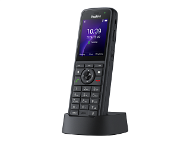

Yealink AX86R
Цена носит информационный характер — актуальную стоимость и наличие уточняйте у менеджера.
Беспроводной защищенный Wi-Fi-телефон для обеспечения качественной связи
Yealink AX86R — корпоративный беспроводной IP-телефон с цветным дисплеем и поддержкой Wi-Fi, профессиональная защищенная DECT-Wi-Fi-трубка со встроенным модулем Bluetooth и функцией виброзвонка. Устройство обладает степенью защиты IP67, эффективно обеспечивая водонепроницаемость и пыленепроницаемость, что делает его пригодным для использования в сложных рабочих средах (повышенная запыленность, шумность и влажность). Корпус устройства устойчив к царапинам, ударам, падениям с высоты до 1,8 м и дезинфицирующим средствам.
AX86R поддерживает регистрацию до 4 SIP-аккаунтов, 5-стороннюю конференцсвязь и оснащен цветным дисплеем 2,4''. Трубка объединяет в себе технологии Yealink Optima HD Audio и интеллектуального шумоподавления AI Smart Noise Cancel, что обеспечивает исключительное качество звука и кристально чистую голосовую связь без отвлекающих факторов для эффективной коммуникации.
AX86R оснащен встроенными модулем Bluetooth 5.0 для подключения беспроводной гарнитуры, освобождая руки и повышая удобство работы, а также 2-диапазонным модулем Wi-Fi 2,4/5 ГГц стандарта 6, что обеспечивает оптимальную защиту от помех и более высокую скорость передачи данных. Это особенно важно в загруженных средах. Передовая технология бесшовного роуминга позволяет автоматически переключаться между точками доступа без разрывов соединения, обеспечивая непрерывную работу и мобильность.
Кроме того, AX86R оснащен аккумулятором емкостью 3100 мАч, который обеспечивает до 13 ч разговора и до 300 ч в режиме ожидания, что делает устройство надежным в использовании на протяжении всего рабочего дня. Телефон позволяет освободить руки с помощью зажима для ремня, например, при работе в офисах, супермаркетах, отелях, на заводе или на складе, а встроенный вибромодуль не позволит пропустить звонок даже в шумных местах.
2-диапазонный Wi-Fi стандарта 6 и бесшовный роуминг
Wi-Fi обеспечивает мобильность и гибкость в любом месте с необходимой сетевой инфраструктурой. 2-диапазонный Wi-Fi стандарта 6 отличается повышенной степенью защиты от помех и более высокой скоростью, что позволяет оставаться на связи в условиях интенсивной передачи данных. Трубка поддерживает протокол быстрого роуминга IEEE802.11 k/v/r, обеспечивающий автоматическое переключение сети за миллисекунды. Широкая зона покрытия и быстрый роуминг обеспечивают плавное переключение между точками доступа без прерываний разговора. AX86R оснащен встроенным модулем Bluetooth 5.0 для Bluetooth-гарнитур, что освобождает руки и обеспечивает более свободный подход к работе в мобильном офисе.
Аудио Optima HD и технология интеллектуального шумоподавления
AX86R обеспечивает связь без отвлекающих факторов благодаря передовой в отрасли технологии Yealink Optima HD Voice, которая сочетает в себе аппаратное/программное обеспечение с широкополосной технологией и интеллектуальной технологией фильтрации шума AI Smart Noise Cancel. Система предоставляет пользователю высокое качество звука без посторонних шумов, оптимальные акустические характеристики и возможность вести разговор без помех. AX86R совместим со слуховыми аппаратами (HAC), помогая пользователям с нарушением слуха воспринимать голос собеседника более четко.
Единое управление, простота обслуживания
Wi-Fi-телефоны серии AX используют унифицированное встроенное ПО и поддерживают унифицированное управление с помощью платформы Yealink Device Management Platform (YDMP), которая значительно упрощает управление и снижает затраты на техническое обслуживание. Кроме того, телефоны поддерживают быструю настройку сети с помощью смартфона и позволяют осуществлять массовый доступ к сетям Wi-Fi по воздуху, повышая эффективность развертывания.
Гарантия — 18 месяцев.
Характеристики
Функции телефона
- 4 SIP-линии
- Быстрый вызов, повторный набор
- Удержание/перевод/ожидание/переадресация вызовов
- Экстренный вызов
- Отключение микрофона, DND ("Не беспокоить")
- Автоответ
- Горячая линия
- Обратный вызов
- Локальная 5-сторонняя конференция
- Вызов по IP-адресу
- Выбор/импорт/удаление мелодии вызова
- Настройка времени: автоматически или вручную
- План набора, XML-браузер, Action URL/URI
- RTCP-XR (RFC3611), VQ-RTCPXR (RFC6035)
- Настраиваемые программные клавиши
- Поддержка Bluetooth-гарнитуры:
- основные функции: ответ/завершение/заглушение вызова;
- дополнительные функции: повторный набор/удержание вызова/управление громкостью.
Экран и индикаторы
- Цветной 2.4" TFT-экран с разрешением 240 х 320
- Подсветка клавиатуры
- Виброоповещение
- Обои рабочего стола и экранная заставка
- Светодиодный индикатор для вызовов и голосовой почты
- Поддержка Caller ID, отображение имени, номера и аватара
Функциональные кнопки
- 3 программных клавиши
- 6 функциональных клавиш: вызов, отбой, громкая связь, голосовая почта, отключение микрофона, трансфер
- Навигационные клавиши и клавиша ОК
- Клавиши управления громкостью
- Клавиша оповещения
- Клавиша PTT
Кодеки и настройки голоса
- HD-аудио
- Поддержка HAC (совместимость со слуховыми аппаратами)
- Технология Acoustic Shield
- Аудиокодеки: G.722, PCMU (G.711μ), PCMA (G.711A), G.729, G.729A, G.729B, G.729AB, G.726, G.723.1, iLBC
- DTMF: In-band, Out-of-band (RFC 2833), SIP INFO
- Full-duplex (полнодуплексная) громкая связь с AEC (подавление эха)
- 2 микрофона с шумоподавлением
- Технология интеллектуального шумоподавления
- VAD (обнаружение активности голоса), CNG (генератор комфортного шума), AEC (подавление эха), PLC (маркирование потери пакета с медиа-данными), AJB (адаптивный буфер для голосовых пакетов), AGC (автоматическая регулировка чувствительности микрофона)
Записные книги
- Локальная адресная книга до 1000 записей
- Чёрный список
- Удалённая записная книга XML, LDAP
- Google-контакты
- Интеллектуальный набор
- Поиск по записным книгам, импорт/экспорт локальной записной книги
- История вызовов: все/исходящие/входящие/пропущенные/переадресованные
Интеграция с IP-АТС
- Анонимный вызов, отклонение анонимного вызова
- Интерком
- Многоадресное вещание
- Отложенный вызов
- Индикатор голосовой почты
- Парковка/перехват вызова
- Запись вызова
- Голосовая почта
Управление
- Настройка: браузер/телефон/Autoprovision
- Autoprovision через FTP/TFTP/HTTP/HTTPS для массовой настройки
- Autoprovision через PnP
- Поддержка TR-069
- Блокировка телефона
- Сброс к настройкам по умолчанию, перезагрузка
- Экспорт сетевого и системного лога
- Поддержка платформ управления устройствами Yealink (YDMP/YCMS)
Интерфейсы
- 1 х аудиоджек 3,5 мм
- 1 х порт USB Type-C
Сетевые характеристики и безопасность
- Встроенный 2-диапазонный Wi-Fi:
- стандарты сети: 2,4/5 ГГц IEEE802.11 a/b/g/n/ac/ax;
- диапазоны частот: 2,4/5 ГГц;
- роуминг: IEEE802.11 k/r/v.
- Встроенный Bluetooth 5.0
- IPv4/IPv6
- SIP v1 (RFC2543), v2 (RFC3261)
- Поддержка резервирования SIP-сервера
- Преодоление NAT: STUN, ICE
- Режим соединения SIP: Proxy и peer-to-peer (по IP-адресу)
- Получение IP-адреса: статический/DHCP
- HTTP/HTTPS-веб-сервер
- Синхронизация времени и даты через SNTP
- UDP/TCP/DNS-SRV (RFC 3263)
- QoS: Layer 3 ToS DSCP, 802.11e/WMM
- Управление сертификатами HTTPS
- Шифрование конфигурационного файла (AES256)
- Дайджест-аутентификация с помощью MD5/MD5-sess
- Поддержка IEEE802.1X
- WPA, WPA2, WPA3
- Безопасная загрузка
- GARP (Generic Attribute Registration Protocol)
Физические характеристики
- Адаптер питания: вход AC 100-240 В, выход DC 5 В/2 А
- Безопасная высота падения: 1,8 м
- Степень защиты: IP67
- Рабочая влажность: 10-95%
- Рабочая температура: 0-40 °C
- Устойчивость к химической чистке
- Антибактериальный дизайн
- Аккумулятор: 3100 мАч, перезаряжаемая литий-ионная батарея, 3,7 В, 11,47 Втч:
- до 13 ч в режиме разговора (в идеальных условиях);
- до 300 ч в режиме ожидания (в идеальных условиях).
- Размер трубки: 160,1 x 55,3 x 25,85 мм
- Вес трубки: 218 г